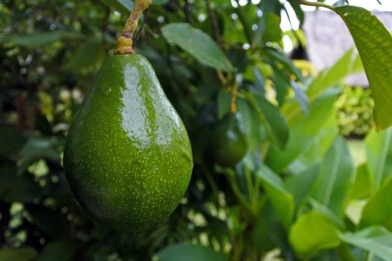

Avocados (selecting, ripening and freezing)
Did you know that you can freeze avocados? I sure didn’t. Tomorrow we are heading out-of-town and as I was prepping the house for our departure when I realized that I had 6 RIPE avocados that needed to be eaten. Well, I can’t possibly eat all 6 of them in a day so I did a little research and found out that a person can freeze them! Yay!

Temperamental to store.
Once the skin is punctured and the air is exposed to the fleshy part inside, they will begin to turn brown. Ripe avocados can be stored in the refrigerator for five to seven days at most, assuming they are kept in airtight containers, but they can last in the freezer for up to five months.
Freezing Avocados
- Cut the avocado in half. Beware of the seed in the middle.
- Remove and discard the seed.
- Remove the fleshy part with a spoon. An easy way to do this is to cut the flesh horizontally and vertically to make little squares and then scoop them into a bowl.
- Mash the avocado pieces into a puree using a fork, a large spoon or even a potato masher.
- Add 1 tbsp. of lemon juice for every two avocados, and mix it in well.
- Scoop the puree into an airtight container, making sure to leave a little extra room, as it will expand when it is frozen.
- When it’s time to thaw the frozen avocados put them in the refrigerator or place the container in a bowl of cool water to accelerate thawing.
- It may be helpful to mark the date of when the puree was placed into the freezer with a marker or a label so you will know whether it has expired. The puree should be discarded after five months in the freezer.
Whenever you store foods in the fridge or freezer, it is a good habit to label it with the measurements and the date on it. This way you can avoid mystery foods and make sure you use them before they get to old. I try to think ahead and measure my quantities into amounts that I am likely to use all at once. That way I avoid defrosting too much and causing waste.
 How to Ripen Avocados
How to Ripen Avocados
- To ripen avocados slowly, put them in the fruit bin of your refrigerator (no apples please, that would be mixed signals).
- Avocados can be kept for up to two weeks this way.
- They will ripen very slowly, so when you take them out of the refrigerator they will be ready to eat in a couple of days.
- To ripen an avocado faster, place in a brown paper bag and set in your oven with only the oven light on.
- Once avocados are at a desired stage of ripeness, they may be refrigerated for up to 5 to 7 days
Purchasing & Using Avocados
- Avocados must be used when fully ripe. They do not ripen on the tree and are rarely found ripe in markets. Fresh avocados are almost always shipped in an unripe condition.
- To test for ripeness by cradling an avocado gently in your hand. Ripe fruit will yield will be firm, yet will yield to gentle pressure. If pressing leaves a dent, the avocado is very ripe and suitable for mashing.
- You can also remove the little plug where the avocado grew from the branch if it is a bright green underneath the avocado is ripe.
- They are best served at room temperature.
Types of Avocados
- The two most widely marketed avocado varieties are the rough-skinned, almost black Hass and the smooth, thin-skinned green Fuerte.
- The Hass has a smaller pit and a more buttery texture than the Fuerte.

Just in case you didn’t know… avocados grow on trees.
© AmieSue.com